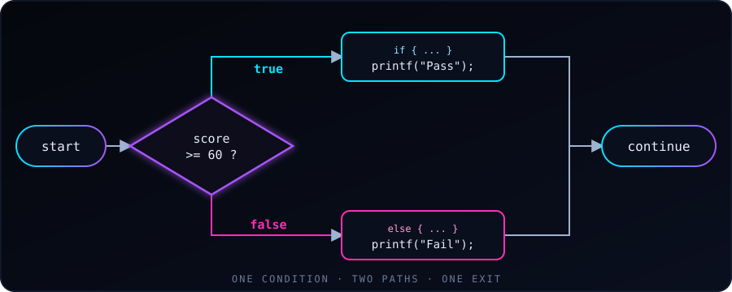

An if-else statement is a fundamental programming tool that lets a program make decisions and run different blocks of code based on whether a specific condition is true or false.

if / else works: one condition, two paths, one exitThe condition is evaluated once. If it is true (non-zero), the if block runs; otherwise the else block runs. Either way, the program then continues with the code that follows.
Here are ten scenarios from real programs, each showing a common pattern you’ll actually write. The snippets are fragments: put them inside main(), and add #include <stdio.h> (plus <string.h> for examples 2 and 9).
1. Grade calculation from a score
int score = 85;
if (score >= 90) {
printf("Grade: A\n");
} else if (score >= 80) {
printf("Grade: B\n");
} else if (score >= 70) {
printf("Grade: C\n");
} else if (score >= 60) {
printf("Grade: D\n");
} else {
printf("Grade: F\n");
}Pattern: range-based classification. Order matters — check the highest range first, because >= 80 would also be true for a score of 95.
2. Login authentication check
char *username = "admin";
char *password = "secret123";
if (strcmp(username, "admin") != 0) {
printf("Unknown user\n");
} else if (strcmp(password, "secret123") != 0) {
printf("Wrong password\n");
} else {
printf("Login successful\n");
}Pattern: sequential validation. Each condition checks a different requirement, and you fail fast at the first problem. (Note: strcmp is from <string.h>.)
3. ATM withdrawal validation
double balance = 500.00;
double withdrawal = 700.00;
if (withdrawal <= 0) {
printf("Invalid amount\n");
} else if (withdrawal > balance) {
printf("Insufficient funds\n");
} else if (withdrawal > 1000.00) {
printf("Daily limit exceeded\n");
} else {
printf("Dispensing $%.2f\n", withdrawal);
balance -= withdrawal;
}Pattern: multiple guards before the “happy path”. Each else if rejects one bad case; the final else handles the successful case.
4. File open result check
FILE *fp = fopen("data.txt", "r");
if (fp == NULL) {
printf("Could not open file\n");
} else {
printf("File opened successfully\n");
fclose(fp);
}Pattern: single check with success path. This is ubiquitous in C — almost every I/O function returns NULL or -1 on failure, so you check and branch.
5. Leap year determination
int year = 2024;
if (year % 400 == 0) {
printf("%d is a leap year\n", year);
} else if (year % 100 == 0) {
printf("%d is not a leap year\n", year);
} else if (year % 4 == 0) {
printf("%d is a leap year\n", year);
} else {
printf("%d is not a leap year\n", year);
}Pattern: cascading modular rules. The order is crucial — a year divisible by 400 is a leap year even though it’s also divisible by 100. Getting the order wrong gives wrong results.
6. Traffic light controller
char light = 'G';
if (light == 'R') {
printf("Stop\n");
} else if (light == 'Y') {
printf("Caution — prepare to stop\n");
} else if (light == 'G') {
printf("Go\n");
} else {
printf("Invalid signal\n");
}Pattern: discrete state handling. Each branch corresponds to one exact value, and the final else catches anything unrecognized. Often written with switch instead, but if/else works fine.
7. Age-based ticket pricing
int age = 8;
double price;
if (age < 5) {
price = 0.00;
} else if (age < 18) {
price = 5.00;
} else if (age < 65) {
price = 12.00;
} else {
price = 8.00;
}
printf("Ticket price: $%.2f\n", price);Pattern: assigning a value based on ranges. Notice how the if/else chain builds a value rather than printing directly. This is often a cleaner pattern than printing inside each branch.
8. Even/odd and sign classification
int n = -7;
if (n == 0) {
printf("Zero\n");
} else if (n > 0) {
if (n % 2 == 0) {
printf("Positive even\n");
} else {
printf("Positive odd\n");
}
} else {
if (n % 2 == 0) {
printf("Negative even\n");
} else {
printf("Negative odd\n");
}
}Pattern: nested if/else for multi-dimensional classification. The outer chain handles sign; the inner ifs handle parity. This is a good example of when nesting is natural.
9. Input validation for a web form
char *email = "user@example.com";
char *name = "";
int age = 25;
if (strlen(name) == 0) {
printf("Error: Name is required\n");
} else if (strchr(email, '@') == NULL) {
printf("Error: Invalid email address\n");
} else if (age < 0 || age > 150) {
printf("Error: Age out of range\n");
} else {
printf("Form submitted successfully\n");
}Pattern: validate each field in sequence, report the first error. Notice the use of || (logical OR) inside a single condition — you can combine multiple checks with && (AND) and || (OR).
Key takeaways
- Conditions are checked top to bottom, and only the first true branch runs, so order ranges carefully (examples 1, 5).
- Use a final
elseas a catch-all for invalid or unexpected input (examples 6, 10). - Prefer
if / elsefor ranges and compound conditions;switchsuits many exact-value matches. - Always use braces
{ }, even for one-line blocks, to avoid subtle bugs.